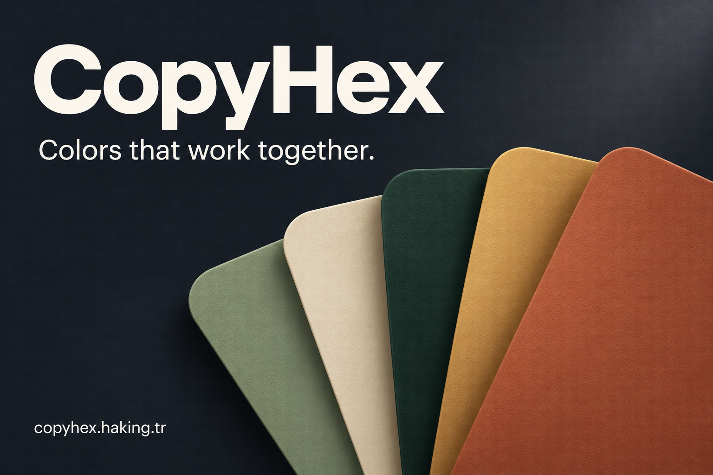
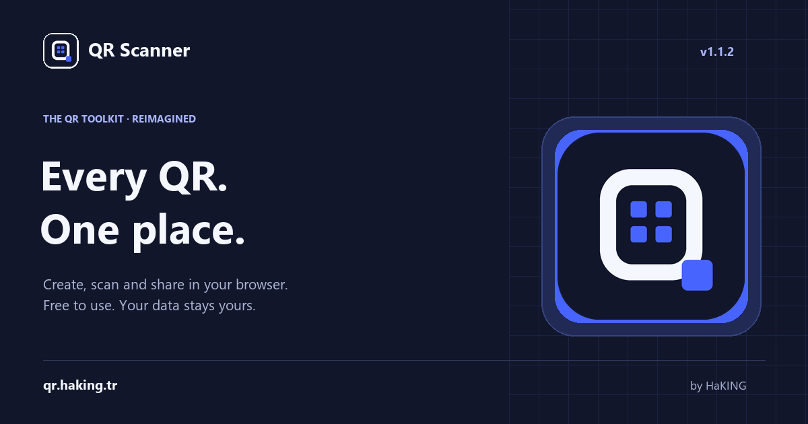
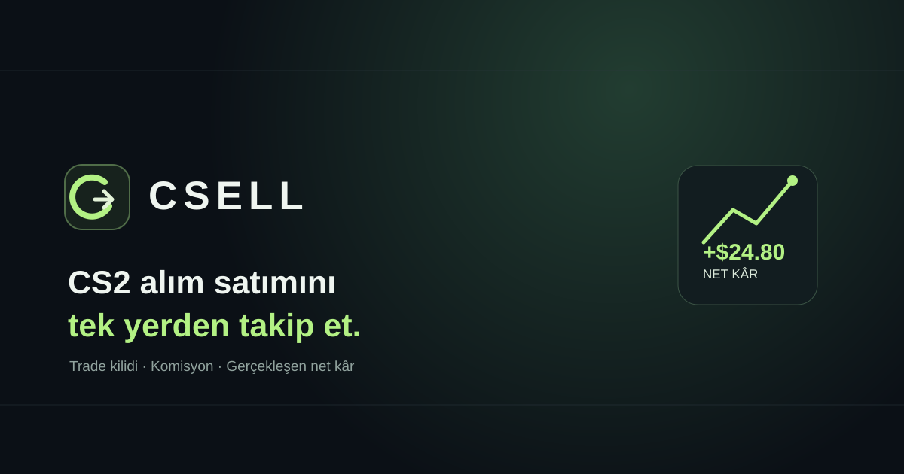
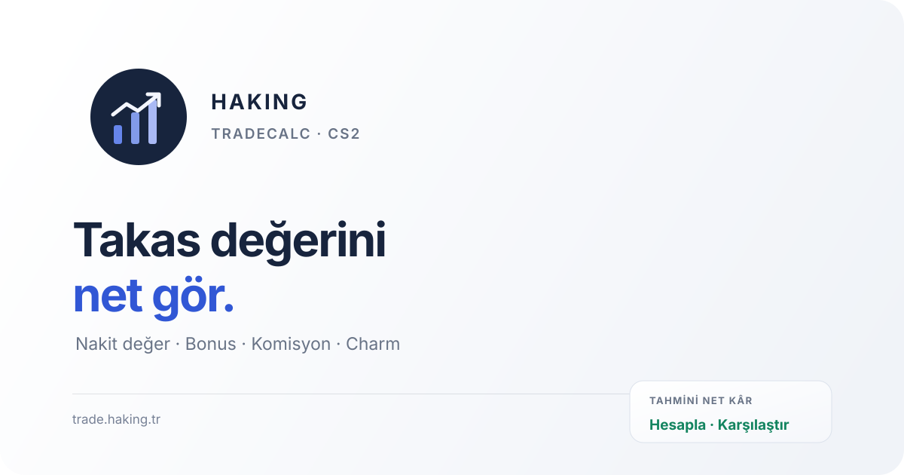
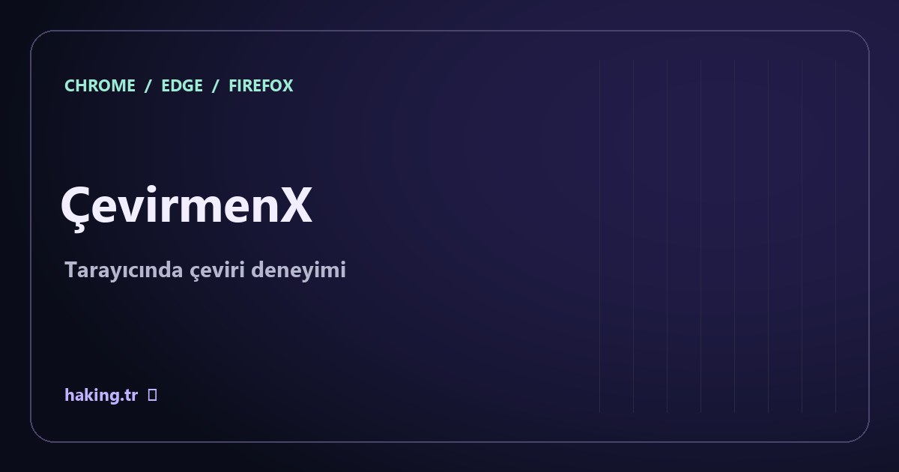
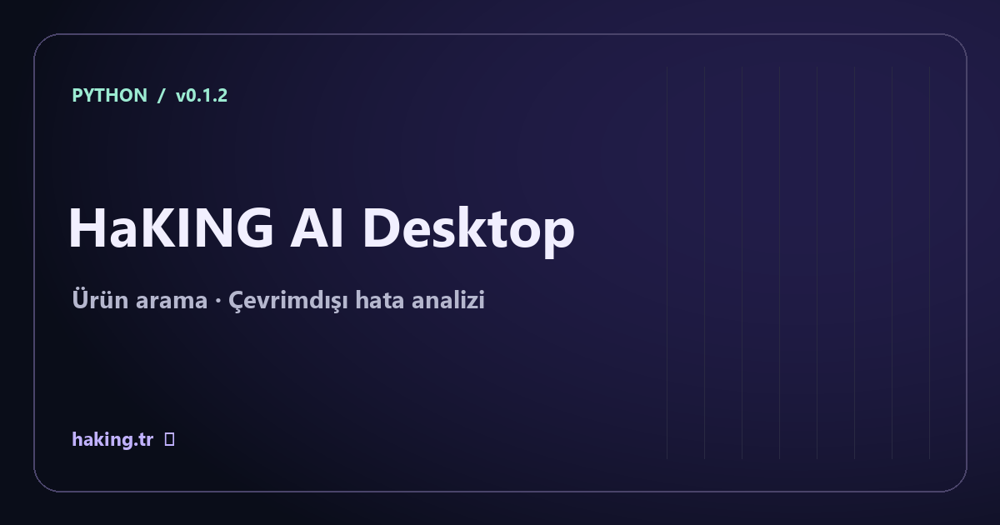

Yapay zekâ · REHBER
Yapay zekâ sohbetinde ilk yanıt neden gecikir?
Sunucu uyanması, model bekleme süresi ve akışlı yanıt arasındaki farkları ölçerek darboğazı bulmak.
Yazıyı oku →Yapay zekâ arayüzlerinden tarayıcı içi 3D deneyimlere, günlük problemleri çözen araçlar geliştiriyorum. Burada projelerin yalnızca sonucunu değil, arkasındaki mühendislik kararlarını da paylaşıyorum.
Yapay zekâ, eğitim araçları ve tarayıcı deneyimleri üzerine yeni okumalar.
Sunucu uyanması, model bekleme süresi ve akışlı yanıt arasındaki farkları ölçerek darboğazı bulmak.
Yazıyı oku →NotMatik bağlamında ağırlıklı ortalama hesabını örnekle öğrenin ve sık yapılan hesaplama hatalarını ayırt edin.
Yazıyı oku →QR Scanner bağlamında tarayıcı izinleri, URL önizleme ve kullanıcı kontrollü bağlantı açma rehberi.
Yazıyı oku →Dokuz proje; tasarım araçları, yapay zekâ, eğitim, tarayıcı eklentileri ve işlem takibi. İlgini çeken ürünü seç, özelliklerini incele.

Renk arama, OKLCH tema üretimi, kontrast kontrolü ve CSS token dışa aktarımıyla tasarımdan uygulamaya uzanan çalışma alanı.

Yedi QR türü oluşturma, PNG/SVG çıktısı, kamera ve yerel görsel taraması. Web uygulaması ve tarayıcı uzantısı bir arada.
FastAPI servis katmanı ve akışlı yanıtlarla sohbet deneyimi. İstemci, API ve model sağlayıcısı arasında tanımlı sorumluluklar.

CS2 eşya alımları, komisyonlar, gerçekleşmiş sonuçlar ve takas sürelerini cihazda tutan işlem günlüğü.

Hedef maliyet, komisyon sonrası nakit karşılığı, kâr ve marj senaryolarını karşılaştıran tarayıcı tabanlı planlayıcı.
Derslerin değerlendirme ağırlıklarını görünür kılan not hesaplama ve hedef puan senaryoları aracı.

Alt+T ve sağ tıkla çeviri, kişisel sözlük, yerinde değiştirme, seslendirme ve 18 dilde arama. cevir.haking.tr üzerinden keşfet.

Yazım hatalarına toleranslı ürün arama, yöntem karşılaştırma raporları ve çevrimdışı hata imzası analizi.
Ürün modelini tarayıcıda farklı açılardan incelemeyi sağlayan, HTML arayüzüyle bütünleşik 3D showroom.
Problem, karar, uygulama ve öğrendiklerim. Her yazı gerçek bir ürün bağlamında teknik ayrıntılara iner.
async for chunk in response:
yield format_sse(chunk)FastAPI backend ile AI sağlayıcısı arasında nasıl bir servis sınırı kurdum? SSE akışı, prompt yönetimi ve istemci tarafında bekleme hissini azaltan kararlar.
Vaka analizini oku ↗Saksı modellerini ürün vitrini deneyimine taşırken render yükü, ışık dengesi ve DOM kontrollerini nasıl birlikte ele aldım?
Vaka analizini oku ↗Tarayıcı izinleri ve eklenti yaşam döngüsünden not ağırlıklarını işleyen hesaplama mantığına, iki küçük ürünün ortak tasarım ilkeleri.
Vaka analizini oku ↗Şeffaflık notu Vaka analizleri proje bağlamını ve teknik kararları anlatır. Ölçüm verisi bulunmayan yerlerde sayısal performans veya başarı iddiası kullanılmaz; kapsamı her makalenin içinde açıkça belirtirim.
Geri bildirim gönder ↗Ben Halit Güneş. İstanbul Kültür Üniversitesi'nde Bilgisayar Programcılığı öğrencisiyim. HaKING; kullanıcı deneyimi, web teknolojileri ve küçük ama gerçek problemleri çözen yazılım araçları üzerine üretim alanım. NotMatik, HaKING AI ve QR Scanner gibi projelerde farklı katmanları deneyimliyor; öğrendiklerimi vaka analizleriyle belgeliyorum.
Projeler ve geliştirme yaklaşımım ↗Proje, yazı ya da iş birliği hakkında konuşalım. Geri bildirimlere ve yeni fikirlere açığım.
İletişime geç ↗H.